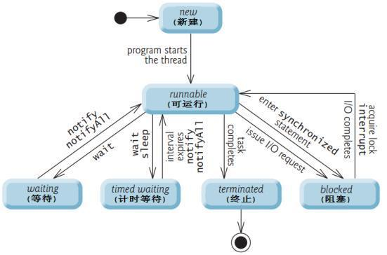
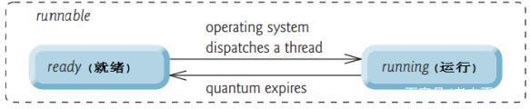
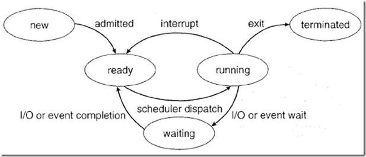
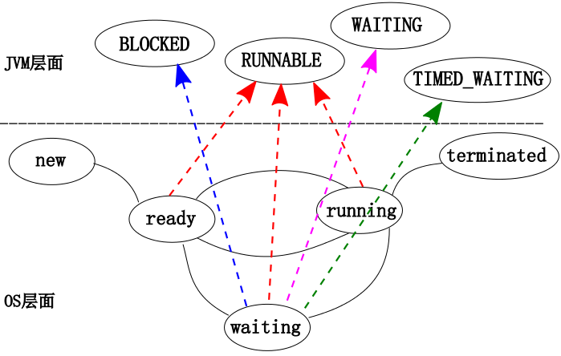

Java多线程基础--线程生命周期与线程协作详解
前言
各位亲爱的读者朋友，我正在创作 Java多线程系列 文章，本篇我们将梳理基础内容：线程生命周期与线程协作
这是非常基础的内容，本篇仅从 知识完整性 角度出发，做一次梳理。
作者按：本篇按照自己有限的知识进行整理，如有谬误，还请读者在评论区不吝指出
了解系列以及总纲：Java多线程系列
线程生命周期
面向对象设计中，广义上对象均具备生命周期，在狭义上，Thread 类实例的 状态 状态的转变即为线程生命周期。
依据JDK 1.5 开始的代码，Thread实例的State存在6种：
- NEW
- RUNNABLE
- BLOCKED
- WAITING
- TIMED_WAITING
- TERMINATED
并且有如下生命周期图：

NEW 新建
尚未 start 的线程的状态，从代码上看：
Thread thread=new Thread();
thread.start();
在调用start前，即为 NEW 状态。
RUNNABLE 可运行
当start方法被调用后，即进入 RUNNABLE 状态，注意：
- start方法多次调用将返回
IllegalThreadStateException异常 - RUNNABLE 存在两种细分：ready（就绪）和 running（运行），调用start时，如果native方法
start0调用成功则线程就绪，调用失败则从ThreadGroup中移除。 就绪状态的线程被处理器调度获得CPU时间片，则变为running

BLOCKED 阻塞
注意，JVM中线程的阻塞状态不同于操作系统的I/O阻塞，仅仅是在等待获取监视器锁，在JVM中，发生在进入（或者 调用过 Object#wait() 之后重新进入）synchronized 块/方法
WAITING 等待
线程进入这种状态意味着："等待其他线程执行特定操作"，笼统的从意图上看，它在等待其他线程的执行结果，当对方完成后唤醒它继续工作。
Object#wait()with no timeoutThread#join()with no timeoutLockSupport#park()
如上三种方式可以让线程进入 WAITING 状态，只能等待其他线程进行唤醒
TIMED_WAITING 计时等待
类似于 WAITING 只不过这种等待是有时限的，
- 当前线程
Thread#sleep调用 - 调用
Object#wait()with timeout - 对其他线程调用
Thread#join(long)with timeout LockSupport#parkNanosLockSupport#parkUntil
会进入这种状态
TERMINATED 终止
线程中的所有任务执行完毕后进入这种状态，运行时异常或者Error也会导致线程进入终止状态。
小结
务必注意，以上6种状态是从jdk1.5开始引入的。
在一些博客、操作系统相关的书籍中，会看到类似下图的内容：

注意，这是操作系统层面进程、或者早期的单线程进程时期的进程生命周期，不能简单的和Java线程生命周期混为一谈。
可以和Java的线程状态进行如下的映射关联：

操作系统是从 CPU使用 的角度谈论线程的状态，而JVM是从自身 管理、调度 的角度谈论线程的状态，更贴切地讲是 服务于监测 ，它受限于JVM显式引入的机制。不难理解：
- OS中的线程：ready、running均对应了 java线程的
RUNNABLE状态； - 而OS中的线程因为
I/O或者Event wait让出CPU使用权进入waiting，并且I/O、Event尚未完成时，并不会进入到可使用CPU的ready状态。 在JVM层面：- 线程可能处在等待监视器锁的
BLOCKED状态， - 也可能是通过操作进入了
WAITING、TIMED_WAITING状态， - 也可能处于
RUNNABLE状态 ，例如I/O发生时
- 线程可能处在等待监视器锁的
线程API与线程协作
除却 Thread 中的API，Object中还有和监视器锁有关的API
Object相关API
必须在同步代码中调用（准确的讲：获取了对应的锁方可调用），否则抛出 IllegalMonitorStateException
Object#wait()
使当前线程 立刻 释放锁对象 、进入 WAITING 状态，直到被其他线程唤醒，进入等锁池。
Object#wait(long /*timeout*/)
和
Object#wait(long /*timeout*/,int /*nanos*/)
//jdk 1.8 源码附于下
使当前线程 立刻 释放锁对象 、进入 TIMED_WAITING 状态，直到被其他线程唤醒或者达到时间自动唤醒，进入等锁池。
//附 jdk 1.8
class Object {
public final void wait(long timeout, int nanos) throws InterruptedException {
if (timeout < 0) {
throw new IllegalArgumentException("timeout value is negative");
}
if (nanos < 0 || nanos > 999999) {
throw new IllegalArgumentException("nanosecond timeout value out of range");
}
if (nanos > 0) {
timeout++;
}
wait(timeout);
}
}
Object#notify()
在 同一个等待阻塞池中 随机唤醒一个处于等待中的线程
Object#notifyAll()
在 同一个等待阻塞池中 唤醒所有等待中的线程
Thread中相关的API
static Thread#interrupted()
检测当前线程是否已经中断,调用后将该线程的中断标志位设置为false
static Thread#sleep(long /*millis*/)
使当前线程睡眠，不释放锁对象，让其他线程具有被执行机会
static Thread#yield()
使当前线程放弃cpu的执行权。
但选择执行的线程依赖于线程的优先级，有可能又被重新选中
Thread#interrupt()
中断该线程，实际只是将中断标志设置为true
如果目标线程处在sleep(),join(),wait()中时，目标会收到抛出的 InterruptedException 异常
Thread#join()
阻塞当前线程，等待目标线程执行完毕后唤醒
Thread#join(long /*millis*/)
阻塞当前线程，等待目标线程执行完毕后、或者等待了设定的时间后唤醒
其他API略
线程之间的协作
不难理解，程序往往被设计为通过多个线程之间的协作完成一项复杂的任务，而每个线程所承担的职责也被简化。
但这种设计方式有利亦有弊，所面向的问题过于具化，模型难以复用。
作者按：当然，本文中所指的线程协作，仅局限于线程之间通过监视器锁、线程API让线程执行的顺序有序可控，在此基础上完成整体任务
本篇文章篇幅较短，内容也较为基础、浅显，但部分内容依旧值得深挖，例如JVM如何实现线程管理，可能短期内不会得到明显的提升但可以加深对JVM、OS、程序微观运行过程的理解。
另外，我删除了线程之间协作的WorkShop内容，内容过于干巴巴，如果有机会，我更希望以 三思系列 的形式结合具体实例展开讨论。